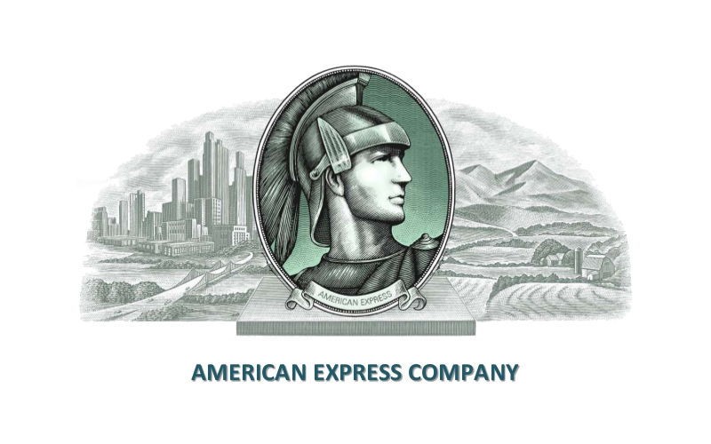

The History of Amex

American Express Company, also known as Amex, was founded in 1850.
The company is best known for its charge cards, credit cards and traveler’s cheques.
In 2016, Amex accounted for 22.9% of the total dollar volume of credit card transactions
in the US with 112.8 million cards issued.
In 1850, Amex began operations as an express mail business in Buffalo, NY.
It was a joint merger of the express companies owned by Henry Wells, William Fargo and John Warren Butterfield.
Wells and Fargo would later split off and form their own company, Wells Fargo.
Amex grew its network by working with “affiliates” that ran other express companies,
including Wells Fargo Pony Express. The possibility of launching a travel charge card
first surfaced in 1946 although it was not actually launched until
October 1, 1958. 250,000 cards were issued prior to the launch date. The card had an annual
fee of $6 and were made of paper, with the account number and cardmember’s name typed.
They were the first in the industry to issue embossed plastic
cards in 1959.
In April 1992, American Express spun off its former subsidiary, First Data Corp.
, in an initial public offering.
Today, First Data is the most dominant Acquiring Bank in the credit card processing space.